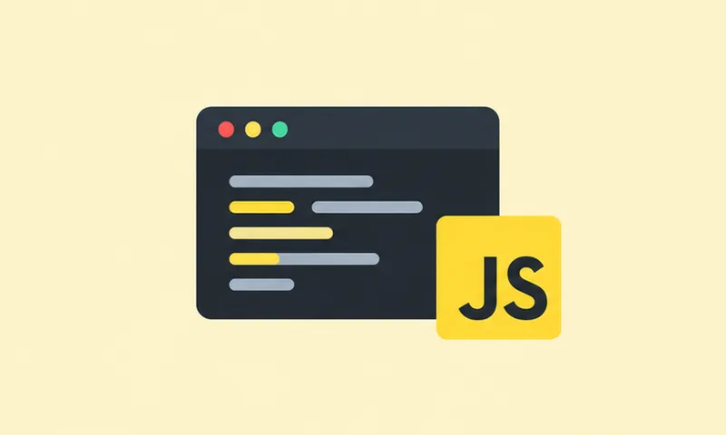
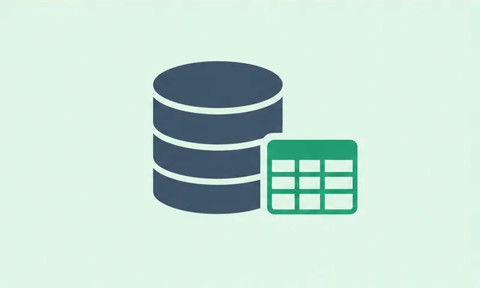

Katas JavaScript
56 katas de JavaScript, desde variables y bucles hasta manipulación del DOM y programación asíncrona. Incluye una pequeña página web hecha desde cero para practicar interacción con el navegador.
Ver repositorio →// todolist-proyectos.md
Con el cierre de 2025 empieza una nueva etapa profesional y académica. Este primer proyecto, construido en HTML y CSS, actúa como escaparate del resto de trabajos del Máster, reuniendo en un mismo lugar las habilidades desarrolladas a lo largo del año.
Ver mis proyectosDespués de más de 20 años combinando dos mundos —el trabajo social con jóvenes y la operativa del sector turístico— este año he dado un paso que llevaba tiempo posponiendo: formarme a fondo en programación.
Mi recorrido empezó a los 16 años como voluntario y monitor de campamentos en Reino Unido, Alemania, Bélgica y casi toda España, los últimos años como director. Más tarde pasé 8 años en Escocia trabajando en logística y operaciones dentro del sector turístico, gestionando equipos, procesos y la parte menos visible (pero esencial) de que todo funcione.
Ese contacto constante con procesos y datos operativos me acercó cada vez más a la tecnología. Hoy curso un Máster en Programación, y mi objetivo es especializarme en análisis de datos. Cuanto más aprendo, más admiro a quienes se dedican a este campo — es exigente, pero pocas cosas son tan satisfactorias como ver un proyecto terminado y funcionando.
Actualmente construyendo mi portfolio y buscando dar el salto profesional hacia el desarrollo y el análisis de datos.

56 katas de JavaScript, desde variables y bucles hasta manipulación del DOM y programación asíncrona. Incluye una pequeña página web hecha desde cero para practicar interacción con el navegador.
Ver repositorio →40 katas de Python, resueltos uno a uno con sus propios tests. Un recorrido por la lógica del lenguaje, desde lo más básico hasta programación orientada a objetos.
Ver repositorio →
Consultas SQL sobre una base de datos relacional de vuelos, practicando cómo extraer y cruzar información real a partir de tablas conectadas entre sí.
Ver repositorio →Un pequeño servidor de películas construido con Node, Express y MongoDB, explorando cómo se guardan y consultan los datos en una base no relacional.
Ver repositorio →